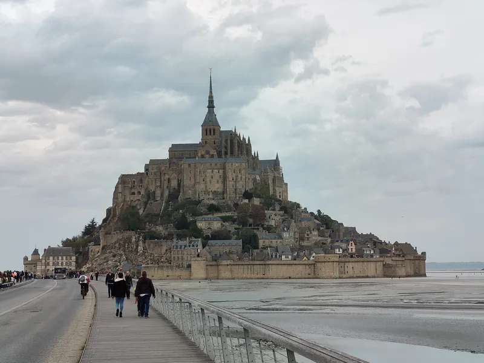
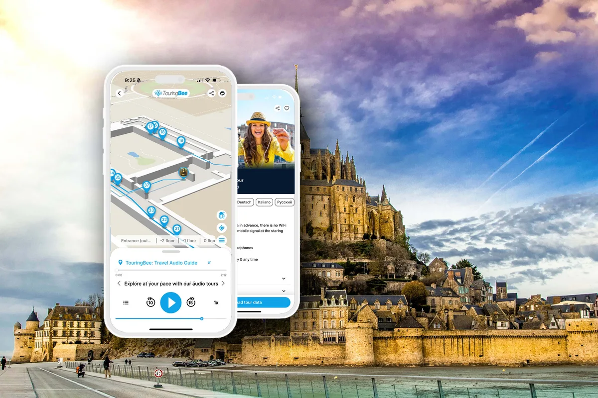

Le Mont-Saint-Michel se dresse dans une baie à la frontière de la Normandie et de la Bretagne, loin des grandes villes — et on peut y aller de plusieurs façons. Bonne nouvelle : quel que soit votre choix, le dernier tronçon est le même — une navette gratuite depuis le parking du continent jusqu'à l'îlot. Ce guide explique comment venir depuis Paris et depuis la région, ce que ça coûte et le temps que ça prend.
Nous passerons en revue chaque option — le train, le bus via Rennes, la voiture et la navette finale « Le Passeur ». À la fin, vous saurez quel itinéraire vous convient, sans perdre de temps en files et correspondances hasardeuses. Et pour la marche du rivage jusqu'aux portes de l'abbaye, notre audioguide autonome vous raconte les histoires à votre rythme — téléchargez-le avant de partir.
Vous préparez tout le séjour ? Commencez par notre guide complet du Mont-Saint-Michel, et revenez ici pour les détails du trajet.
Comment venir, en bref
En train depuis Paris
L'option la plus simple — et souvent la moins chère — est le « train Mont-Saint-Michel » direct au départ de Paris-Montparnasse. Vous prenez le train, descendez à Pontorson–Le-Mont-Saint-Michel et changez pour un bus qui vous dépose à l'entrée de l'îlot. Un seul billet couvre le train et le bus, rien de plus à acheter.
Repère de prix pour 2026 : un aller simple depuis Paris tournait autour de 32 € (train plus bus), enfants 4–11 ans 18,30 €, moins de 4 ans gratuit. Depuis la Normandie, le billet jusqu'à l'îlot est d'environ 20 €. Bon à savoir : ce billet donne 1,50 € de réduction sur l'entrée de l'abbaye. Vérifiez les tarifs et horaires du moment sur sncf-connect.com.
Un point d'horaire : le train direct circule tous les jours d'avril à octobre et les week-ends toute l'année. En semaine l'hiver, prévoyez l'itinéraire via Rennes (ci-dessous).
Réservez votre billet de train
Un seul billet couvre le train depuis Paris-Montparnasse et le bus final jusqu'à l'îlot.
Via Rennes : toute l'année
S'il n'y a pas de train direct à vos dates, l'option la plus sûre passe par Rennes. D'abord un TGV de Paris-Montparnasse à Rennes — environ 2 heures. Depuis la gare de Rennes, un bus Keolis rejoint directement le Mont-Saint-Michel en environ 1h15. Bus tous les jours, toute l'année, et l'arrêt final est juste à côté du parking, des navettes et du centre d'accueil. Vous pouvez réserver le TGV Paris–Rennes sur SNCF.
Vérifiez les horaires de bus à l'avance et calez-les sur votre train : il n'y a que quelques départs par jour, et l'écart entre train et bus peut être gênant. Consultez les horaires du moment sur keolis-armor.com, rubrique Mont-Saint-Michel.
En voiture
La voiture est pratique si vous venez de la région ou combinez le Mont-Saint-Michel avec d'autres étapes en Normandie et Bretagne. Mais on ne roule pas jusqu'à l'îlot — la circulation privée est bloquée. Dans le GPS, indiquez « Parking du Mont-Saint-Michel » — le grand parking du continent, à environ 2,5 km du rocher, avec 4 000 places.
Le parking est payant, et l'on règle avant de sortir. En 2026, le prix dépend de la saison et de la durée. Pour une voiture, à titre indicatif :
| Durée | Basse saison | Moyenne saison | Haute saison |
|---|---|---|---|
| Jusqu'à 3 heures | €10 | €16 | €20 |
| Jusqu'à 6 heures | €12 | €19 | €24 |
| Jusqu'à 24 heures | €14 | €22 | €28 |
Les 30 premières minutes sont gratuites toute l'année (juste de quoi ressortir si vous vous êtes trompé). Réserver le parking en ligne donne une petite réduction. De septembre à juin, le parking est gratuit le soir, de 18h30 à 3h00. Mieux vaut vérifier les tarifs du moment sur le site officiel du Mont-Saint-Michel avant de partir.
Louer une voiture pour la Normandie ?
Comparez les voitures de location et récupérez-la près de l'aéroport ou à Rennes — pratique pour parcourir la région.
Depuis les aéroports parisiens
Si vous atterrissez à Paris et filez directement vers le Mont-Saint-Michel, rejoignez d'abord la gare Montparnasse.
Depuis Charles-de-Gaulle (CDG), le plus simple est le RER B jusqu'au centre de Paris, puis le métro jusqu'à Montparnasse.
Depuis Orly (ORY), le plus simple est la ligne 14 du métro, qui relie l'aéroport directement à Paris ; puis une courte correspondance jusqu'à Montparnasse.
De là, prenez soit le train direct Mont-Saint-Michel, soit un TGV vers Rennes avec la correspondance en bus.
Vous préférez conduire depuis l'aéroport ?
Prenez une voiture de location à CDG ou Orly et descendez par la route — environ 3h30 à 4h jusqu'à la baie.
La navette gratuite Le Passeur

Quel que soit votre moyen d'arriver — train, bus ou voiture — le dernier tronçon est le même. Une navette gratuite, « Le Passeur », relie la zone du continent (parking et centre d'accueil) et l'îlot. Elle circule de 7h30 à minuit, part environ toutes les 12 minutes et met quelques minutes. Son coût est déjà inclus dans le ticket de parking, et ceux qui viennent en bus, en train ou à vélo voyagent aussi gratuitement.
La navette dépose à environ 350 m de l'entrée de l'îlot — le reste se fait à pied, voitures et bus n'atteignant pas les portes. Si vous préférez marcher, comptez environ 45 minutes sur la digue, du parking à l'îlot : une belle promenade avec le rocher qui grandit devant vous.
Quelle option choisir ?
Si vous ne voulez pas comparer des dizaines d'horaires, suivez ce repère simple.
| Si vous… | Meilleur choix |
|---|---|
| Venez pour la première fois de Paris | Train SNCF direct + bus |
| Voyagez en hiver | TGV vers Rennes + bus Keolis |
| Parcourez la Normandie ou la Bretagne | Voiture |
| Voyagez avec de jeunes enfants | Voiture |
| Visitez plusieurs lieux dans la journée | Voiture |
| N'aimez pas conduire | Train |
Dans tous les cas, le dernier tronçon est identique : la navette gratuite Le Passeur ou une marche sur la digue.
À pied ou en navette ?
Les deux sont bien — cela dépend simplement de vos plans.
Prenez la navette si vous :
- voyagez avec des enfants ;
- êtes pressé ;
- êtes arrivé sous la pluie ou un vent fort ;
- n'avez pas envie des presque 2,5 km à pied.
Marchez si vous :
- voulez les plus belles photos du Mont-Saint-Michel ;
- aimez une promenade tranquille ;
- êtes arrivé par beau temps.
Beaucoup marchent à l'aller et rentrent en navette. On profite des panoramas sans s'épuiser en fin de journée. Dans les deux cas, vous pouvez profiter de notre audioguide autonome, qui vous raconte les histoires sur le chemin du rocher.
Conseil TouringBee : si le temps le permet, faites au moins un trajet à pied. La digue offre les plus belles vues du Mont-Saint-Michel — impossibles à saisir depuis la navette. Vous pourrez toujours rentrer avec Le Passeur gratuit.
Combien de temps prévoir
Depuis Paris en train direct, comptez environ 4 heures à l'aller, bus final et navette compris. Via Rennes, c'est à peu près pareil : environ 2 heures de TGV plus 1h15 de bus plus les correspondances. Pour une excursion à la journée, partez tôt et vérifiez les horaires de retour à l'avance — le dernier train ou bus pratique peut partir plus tôt qu'on ne croit.
Vous venez de la capitale juste pour la journée ? Nous avons un guide dédié — Le Mont-Saint-Michel depuis Paris : le guide complet de l'excursion. Et pour la saison la moins fréquentée, voyez notre guide sur le meilleur moment pour visiter.
Parcourez l'îlot avec un audioguide

Audioguide autonome du Mont-Saint-MichelAccès immédiat
- 100 % hors ligne — téléchargez avant d'arriver (pas de réseau au parking)
- Carte GPS hors ligne — vous lancez chaque récit vous-même sur place
- 8 langues, narration par une vraie voix
- Fonctionne sur iOS et Android
Quand vous atteignez enfin les portes, c'est agréable de savoir déjà quoi regarder. L'audioguide TouringBee du Mont-Saint-Michel vous accompagne du rivage aux portes de l'abbaye : une carte hors ligne montre où vous êtes, et chaque récit se lance quand vous arrivez au point. Sans internet, en plusieurs langues, à votre rythme. Astuce : téléchargez-le dans le train ou la voiture — il n'y a pas de Wi-Fi et le signal mobile est faible au point de départ.
Excursions et billets
Pas envie de jongler avec les correspondances ? Prenez une excursion clé en main depuis Paris ou une ville proche — le transfert aller-retour et, souvent, l'entrée de l'abbaye sont déjà inclus. Comparez facilement les excursions depuis Paris sur GetYourGuide. Et si vous venez par vous-même et voulez éviter la file de l'abbaye, regardez les billets pour l'abbaye sur Tiqets.
Conseils pratiques
- Vérifiez si le train direct circule à vos dates ; en semaine l'hiver, prévoyez via Rennes.
- Calez le bus de Rennes sur votre train à l'avance — il y a peu de départs.
- Dans le GPS, indiquez « Parking du Mont-Saint-Michel », pas l'îlot lui-même.
- Le parking se paie à la sortie ; les tarifs d'été sont plus élevés.
- La navette Le Passeur est gratuite et circule jusqu'à minuit — vous pouvez rester pour le coucher de soleil.
- Si vous aimez marcher, comptez environ 45 minutes par trajet sur la digue.
- À la journée ? Vérifiez l'heure du dernier retour avant de partir.
- Téléchargez l'audioguide avant d'arriver — le signal est faible au parking.
Questions fréquentes
Quel est le moyen le moins cher d'aller au Mont-Saint-Michel depuis Paris ?
En général le « train Mont-Saint-Michel » direct depuis Montparnasse : un billet couvre le train et le bus final. À partir d'environ 32 € l'aller — vérifiez le tarif du moment sur sncf-connect.com.
Y a-t-il un train direct tous les jours ?
Le train direct circule tous les jours d'avril à octobre et les week-ends toute l'année. Le reste du temps, c'est plus simple via Rennes avec une correspondance en bus.
Combien de temps depuis Paris ?
Environ 4 heures à l'aller — que ce soit en train direct ou via Rennes, bus final et navette compris.
Peut-on rouler jusqu'à l'îlot ?
Non. Les voitures restent au parking du continent, à 2,5 km ; de là, navette gratuite ou marche.
La navette pour l'îlot est-elle payante ?
Non, la navette Le Passeur est gratuite. Pour ceux venus en voiture, son coût est déjà inclus dans le ticket de parking.
Quelle distance à pied ?
Du parking à l'îlot par la digue, environ 2,5 km, à peu près 45 minutes. La navette dépose plus près — à environ 350 m de l'entrée.
Peut-on arriver le soir ?
Oui. Les soirs d'été, la foule s'éclaircit et le Mont-Saint-Michel est superbe sous la lumière rasante. Le Passeur circule presque jusqu'à minuit, vous pouvez donc rester après le gros des visiteurs.
Peut-on voyager avec une valise ?
Oui. En train ou en bus, vous pouvez monter une valise dans la navette. Sur l'îlot, les rues sont étroites et pavées, alors tirer une grosse valise sur les pavés n'est pas très agréable.
Poursuivez la découverte
À retenir
Aller au Mont-Saint-Michel ne semble compliqué que sur le papier. En pratique, le choix est simple : le train direct depuis Paris s'il circule à vos dates ; l'itinéraire par Rennes le reste du temps ; ou la voiture si vous l'associez à d'autres étapes de la région. Et le dernier tronçon est toujours le même — la navette gratuite ou une courte marche sur la digue jusqu'au rocher.
Pour que l'approche s'accompagne de ses propres histoires, emportez l'audioguide de l'îlot TouringBee — il remplit la marche d'histoire à votre rythme.
Certains liens de cette page sont des liens d'affiliation (SNCF, Booking.com, GetYourGuide, Tiqets, TouringBee). Si vous réservez via eux, nous pouvons percevoir une petite commission — sans surcoût pour vous. Cela n'influence jamais nos recommandations. Voir notre divulgation d'affiliation.